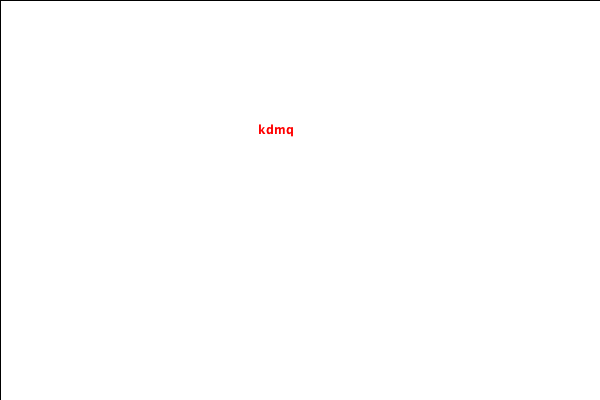
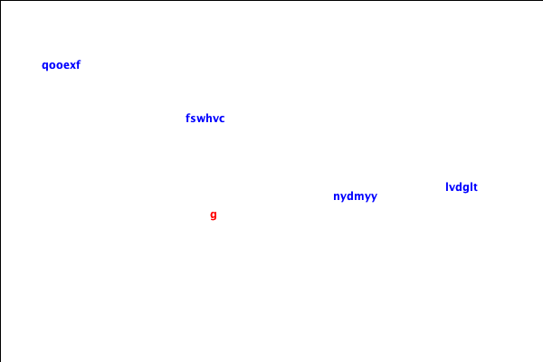
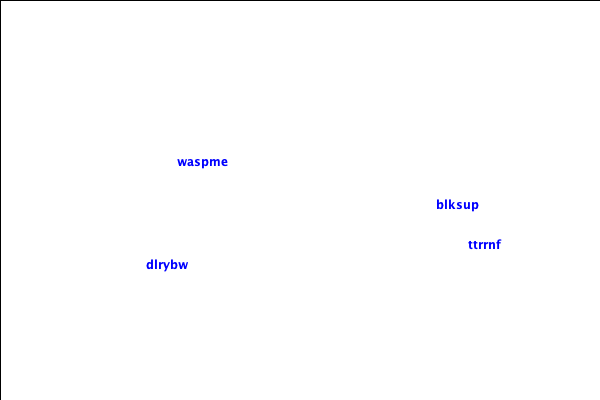
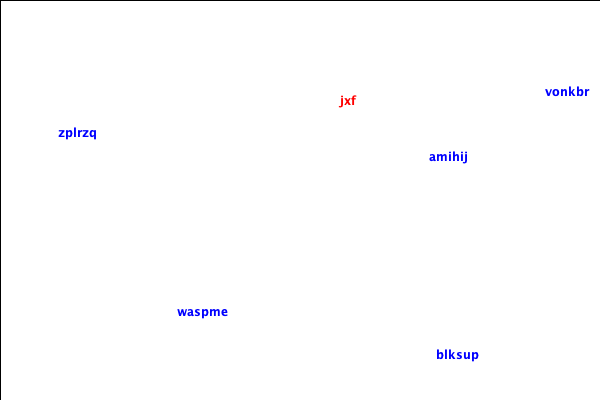

ZType Recreated
The goal of this project was to practice functional design in Java by recreating the typing game ZType, where every tick and key press returns a new, immutable game state.
Technologies:
- Java
Source code is private. Available upon request.
Showcase



